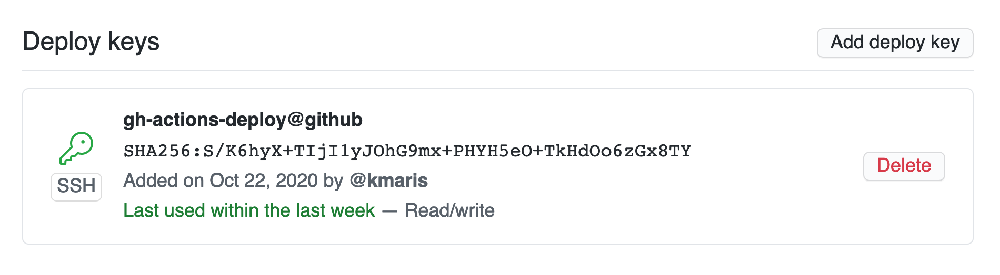
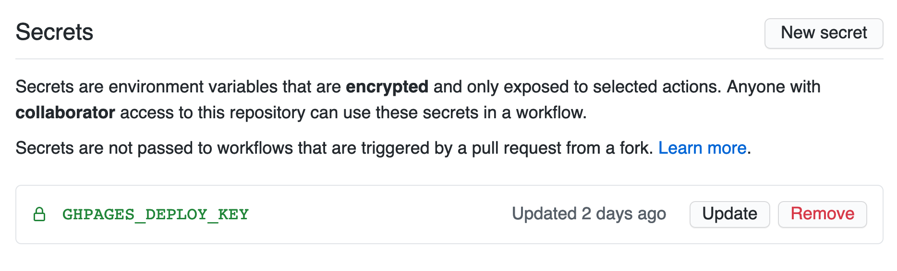

… and how to use it to deploy a static website.
Well, I ran out of patience with my own static website generator. While I do plan to finish it, in the meantime I won’t be using it to generate this website. So, for now it’s hugo. Nowthen, how to get it deployed? I’ve been wanting to try it with Github Actions for a while and this seemed like a nice fit.
Mental outline
There are two primary repositories I’m using to make this website. First is the project source repository containing markdown files, static assets, submodule refs to my fork of the hugo-xmin theme, and so on. Second is the main Github Pages repository that is used as the root resource for https://kmaris.net.
So, what do we need to do? The goal is to get the content from the main project source repository, render it through hugo, and published into the github pages repository. In pseudo-workflow the steps, at first glance, are essentially:
- Clone the main project source
- Render the source to the github pages repository
- Commit and publish to the pages repository
Generally speaking that’s the idea, but some tricks come up during implementation that the steps above don’t cover. For instance, rendering the project source to the pages repository usually implies the destination repository is already checked out. So in the workflow it will be cloned before the build step happens.
… with a pinch of implementation details
Knowing that we’re going to be deploying content into a repository, a deploy key is what we’ll need. A deploy key is an ssh key with the private key stored in the source repository as a secret (alongside the code) and the public part is in the destination repository. This is better than using a personal access token because you’re keeping permissions to your repository very low; namely just to deploying.
So lets do it
Generate your new deploy key:
ssh-keygen -C pagesdeploy@github -f ./pages_key -N ""
You’ll have two files now, a private key named pages_key and the public part
pages_key.pub.
Then create a Deploy key in your pages repo from the public key:

and a Secret in the source repo from the private key:

By using the deploy key to do the checkout, the action runner will have the
permissions to do the push and we don’t have to tinker with tokens. In your
source repo make a workflow (I call mine gh-pages.yml) at
.github/webhooks/gh-pages.yml and in it you’ll have the following:
name: github-pages
on:
push:
branches:
- master
jobs:
pages:
runs-on: ubuntu-latest
steps:
- name: Checkout hugo website
uses: actions/checkout@v2
with:
submodules: true
- name: Checkout pages repo
uses: actions/checkout@v2
with:
repository: kmaris/kmaris.github.io
path: public
ssh-key: ${{ secrets.GHPAGES_DEPLOY_KEY }}
- name: Build website
run: docker run --rm -i -v $(pwd):/src klakegg/hugo:latest --cleanDestinationDir=true
- name: Set website build commit message
run: echo "COMMIT_MSG=$(git log -1 --pretty=reference)" >> $GITHUB_ENV
- name: Commit built website
run: |
cd public
git add --intent-to-add .
if ! git diff --quiet ; then
git config user.name github-actions
git config user.email github-actions@github.com
git commit --all --message "${{ env.COMMIT_MSG }}"
git push
fi
By doing a git add -N . before git diff we can have diff pay attention to
any new, untracked files. And if there are diffs, commit and push the new
content!